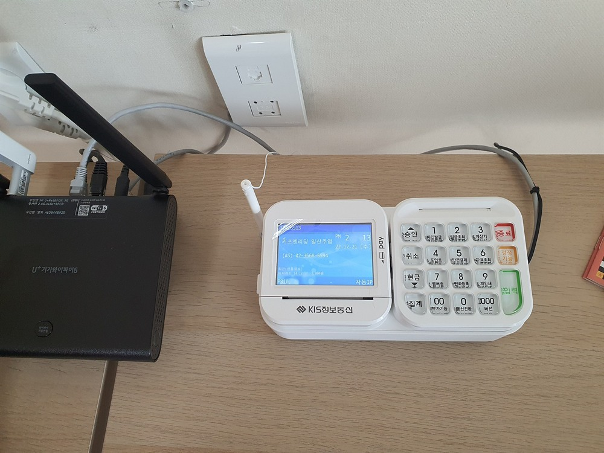

신용카드단말기 올바르게 선택하는 방법 — 사장님이 꼭 알아야 할 체크리스트

가게를 준비하시면 반드시 신용카드단말기를 들여야 합니다. 그런데 막상 알아보면 종류도 많고, 수수료·가맹·렌탈 이야기까지 겹쳐 뭘 기준으로 골라야 할지 막막하죠. 카드단말기·카드결제기·결제단말기·카드조회기… 부르는 이름도 제각각이고요. 설치를 다니는 입장에서, 사장님이 올바르게 선택하려면 뭘 확인해야 하는지를 체크리스트로 정리했습니다.
1. 종류부터 — 유선·무선·블루투스
같은 결제단말기라도 연결 방식이 다릅니다.
• 유선카드단말기 — 인터넷·전화선에 연결해 고정으로 쓰는 방식. 카운터가 정해진 매장에 가장 안정적이고 저렴합니다.
• 무선카드단말기 — 와이파이·LTE로 연결해 들고 다니며 결제. 홀 서빙·배달·출장에 좋습니다. 배달단말기로도 부릅니다.
• 블루투스카드단말기 — 태블릿·포스와 연결해 쓰는 방식. 테이블오더·키오스크 연동 매장에.
• 스마트단말기 — 안드로이드 기반 올인원. 화면 큰 스마트 결제단말기로 포스 기능까지.
2. 결제 방식 — IC·NFC·간편결제 다 되나
요즘은 카드만 받으면 안 됩니다. IC카드단말기(칩 삽입)는 기본이고, NFC단말기(카드·폰 터치), 삼성페이단말기, QR단말기(제로페이·카카오·네이버페이)까지 한 대로 받는지 확인하세요. 손님이 내미는 결제 수단을 못 받으면 그대로 매출을 놓칩니다. 신용카드조회기·카드조회기라 불러도 요즘 기기는 이걸 다 지원합니다.

3. 수수료·가맹 — 이게 진짜 중요합니다
기기값보다 중요한 게 카드 수수료입니다. 매출 규모에 따라 영세가맹점·중소가맹점 우대 수수료가 적용되는데, 신규 창업이면 무실적단말기(매출 실적이 없는 상태)로도 카드가맹점 등록이 됩니다. H포스는 모든 카드사 일괄 가맹을 밴사(VAN)를 통해 한 번에 처리하고, 밴단말기 설정·승인·정산까지 투명하게 안내합니다. 무이자할부·현금영수증·세금계산서도 함께 세팅합니다.
4. 구매? 렌탈? 교체? — 상황에 맞게
• 구매 — 한 번에 사서 매달 나가는 돈이 없는 방식.
• 단말기렌탈·단말기임대 — 초기 부담 없이 월 이용료로 시작. 신규 창업·소상공인단말기로 많이 선택합니다.
• 단말기교체 — 지금 쓰는 기기가 느리거나 고장이면 교체. 기존 가맹 그대로 이어서 처리합니다.
처음이면 렌탈·임대로 시작해 매장이 자리 잡은 뒤 구매로 바꾸는 분도 많습니다. 정답은 없고 내 매출과 상황에 맞추면 됩니다.
5. 업종별로 이렇게 고르세요
• 음식점·고깃집 — 홀 서빙 많으면 무선, 카운터 계산이면 유선. 테이블오더 연동도 고려.
• 카페·분식·편의점 — 유선 1대로 충분. 배달 겸하면 무선 추가.
• 미용실·네일·병원·학원 — 유선 + 정기결제 세팅.
• 배달 전문·푸드트럭·야시장 — 이동식·휴대용 무선(배달단말기)이 필수.
• 무인매장 — 키오스크·셀프결제 단말기 연동.
6. 사장님, 알아볼 때 이것만 확인하세요
① 설치비·월 이용료가 얼마인지 (H포스는 설치비 무료)
② 카드 수수료가 영세·중소 우대 적용되는지
③ IC·NFC·삼성페이·QR 다 되는지
④ 구매·렌탈·임대·교체 중 뭐가 이득인지
⑤ 24시간 A/S가 되는지 (장사 중 먹통이면 큰일)
⑥ 포스·테이블오더·키오스크 연동이 되는지
이 여섯 가지만 확인하면 잘못 고를 일이 거의 없습니다. 어렵게 느껴지시면, 업종과 계산 방식만 알려주세요. 유선·무선 중 뭐가 맞는지, 수수료·월 비용은 얼마인지까지 무료로 계산해 드립니다.
어디서 신청하나요
사업자등록증만 있으면 됩니다. 전화·문자로 매장 정보(업종·계산 방식·필요 대수)를 알려주시면, 방문 설치 + 모든 카드사 일괄 가맹까지 한 번에 처리합니다. 설치비 무료, 평균 4일 이내, 전국 어디든 방문합니다. 개인사업자·법인사업자 모두 진행됩니다.
📞 신용카드단말기 설치 상담 010-6832-1994